packages_to_install <- c("ggplot2", "forecast", "RJDemetra", "ggdemetra", "dygraphs")
packages <- installed.packages()[,"Package"][! packages_to_install %in% installed.packages()[,"Package"]]
if (length(packages) > 0) {
install.packages(packages)
}3 - Décomposition d’une série temporelle
Analyse des séries temporelles avec R
L’objectif de ce TP est d’introduire aux méthodes de décomposition.
Dans ce TP nous utiliserons notamment les niveaux bruts des indices de production industrielle (IPI) publiés le 04 novembre 2022 par l’Insee, fichier de données téléchargeable ici : https://www.insee.fr/fr/statistiques/6655844.
Les packages suivants seront utilisés :
Exercice
Télécharger et importer les données d’IPI et créer un objet mts qui contient les indices bruts.
Solution
if (!file.exists("IPI.xls")) {
download.file("https://www.insee.fr/fr/statistiques/fichier/6655844/IPI_202209.xls", "IPI.xls")
}
ipi <- readxl::read_excel("IPI.xls", sheet = "niveaux bruts-Raw levels")
ipi[1, 1]# A tibble: 1 × 1
`NAF rev. 2`
<dbl>
1 199001ipi <- ts(ipi[, -1], start = 1990, frequency = 12)
Exercice
Étudier les séries de l’IPI dans l’industrie manufacturière ("CZ"), dans le textile, habillement, cuir ("[CB]") : quelle type de décomposition serait adaptée ? Comparer les résultats de la série désaisonnalisée avec stl(s.window = 7), stl(s.window = "periodic") et RJDemetra::x13() avec et sans correction de jours ouvrables (on pourra utiliser la fonction forecast::seasadj() pour extraire la série désaisonnalisée issue de STL et ggdemetra::seasonaladj() pour extraire celle de X-13). Comparer également autour d’une année bissextile.
Solution
library(forecast)
library(RJDemetra)
library(ggdemetra)
library(ggplot2)
library(patchwork)
ipi_cz <- ipi[, "CZ"]
ipi_cb <- ipi[, "[CB]"]
autoplot(ipi_cz) +
labs(y = "Indice", title = "IPI dans l'industrie manufacturière")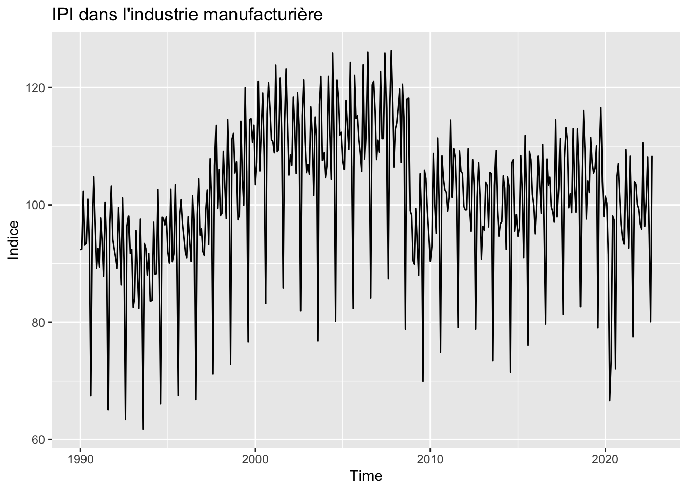
On repère une tendance à la hausse jusqu’en 2009, une rupture lors de la crise financière puis une tendance qui parait relativement stable. La saisonnalité ne semble pas proportionnelle au niveau, le schéma de décomposition est sûrement additif.
cz_stl_mobile <- stl(ipi_cz, s.window = 7)
cz_stl_fixed <- stl(ipi_cz, s.window = "periodic")
cz_x13_sans_cjo <- x13(ipi_cz, "RSA3")
cz_x13_avec_cjo <- x13(ipi_cz, "RSA5c")
(autoplot(seasadj(cz_stl_fixed), ylab = NULL, main = "STL saisonnalité fixée") +
autoplot(seasadj(cz_stl_mobile), ylab = NULL, main = "STL s.window=7")) /
(autoplot(seasonaladj(cz_x13_sans_cjo), ylab = NULL, main = "X-13 sans CJO") +
autoplot(seasonaladj(cz_x13_avec_cjo), ylab = NULL, main = "X-13 avec CJO"))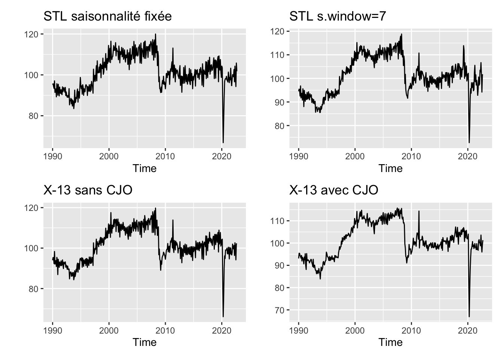
La saisonnalité évolue sûrement dans le temps : STL avec une saisonnalité fixe conduit à des estimations erratiques. Une partie de la variabilité restante provient des effets jours ouvrables.
Il y a un effet jours ouvrables et un effet année bissextile : la production est plus importante lorsque l’on a un jour de plus dans le mois (ce qui parait logique). Avec STL, l’indice désaisonnalisé devrait donc être sur-estimé en février dans les années bissextiles et sous-estimé les autres années.
cz_x13_avec_cjo$regarimay = regression model + arima (2, 1, 1, 0, 1, 1)
Log-transformation: no
Coefficients:
Estimate Std. Error
Phi(1) 0.0461 0.105
Phi(2) 0.2134 0.070
Theta(1) -0.5000 0.101
BTheta(1) -0.6856 0.040
Estimate Std. Error
Monday 0.5674 0.223
Tuesday 0.9162 0.222
Wednesday 0.9361 0.222
Thursday 0.1098 0.221
Friday 0.9240 0.222
Saturday -1.6803 0.222
Leap year 2.2923 0.693
Easter [1] -2.3645 0.446
TC (4-2020) -20.4000 1.992
TC (3-2020) -20.8289 2.002
AO (5-2011) 12.9309 1.841
LS (11-2008) -12.3788 1.633
Residual standard error: 2.202 on 363 degrees of freedom
Log likelihood = -843.2, aic = 1720 aicc = 1722, bic(corrected for length) = 1.829sa_data <- ts.union(seasadj(cz_stl_mobile), seasonaladj(cz_x13_avec_cjo))
colnames(sa_data) <- c("STL", "X13")
autoplot(window(sa_data, start = 1995, end = c(1997, 12)),
ylab = "",
main = "Série désaisonnalisée IPI CZ autour de l'année bissextile de 1996") +
geom_vline(xintercept = c(1996) + 1/12,linetype = 2)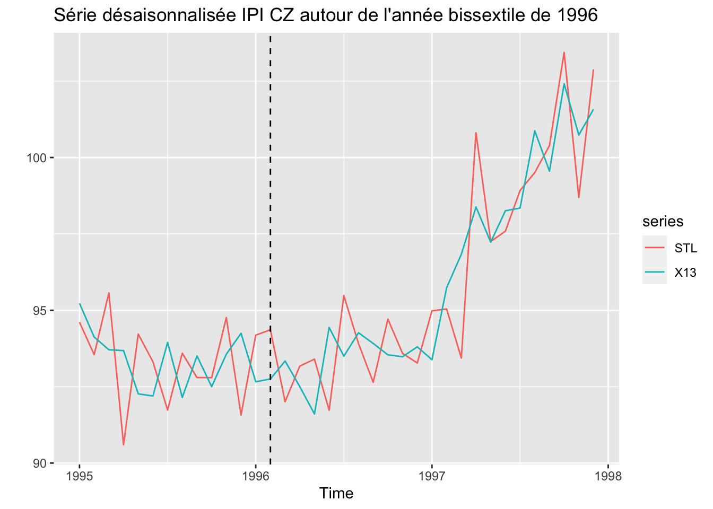
Les coefficients saisonniers semblent surtout évolutifs en juin, août et décembre, ce qui explique également que supposer la saisonnalité stable dans le temps conduit à des estimations bruitées.
plot(cz_x13_avec_cjo$decomposition)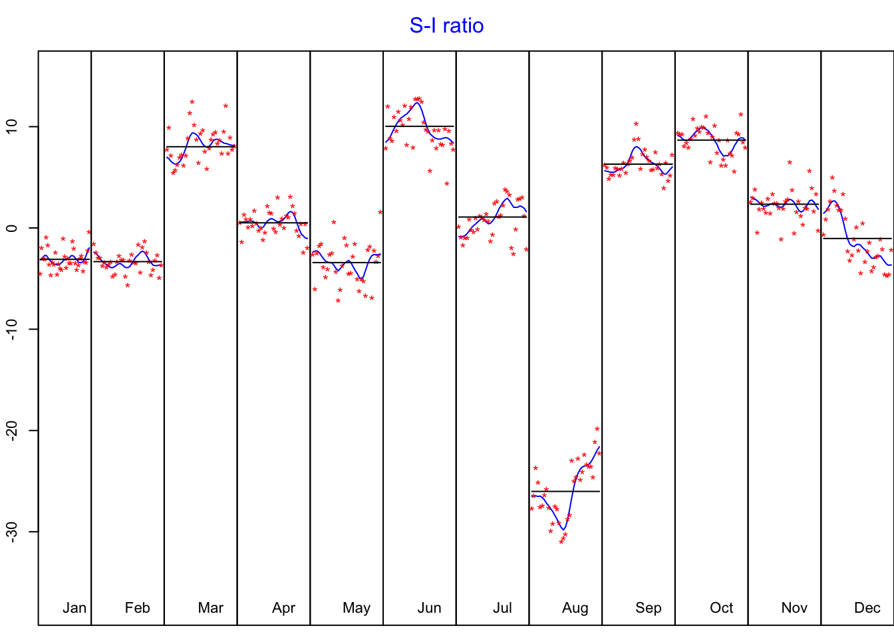
Passons maintenant à la série d’IPI-CB.
autoplot(ipi_cb) +
labs(y = "Indice", title = "IPI dans le textile, habillement, cuir (CB)")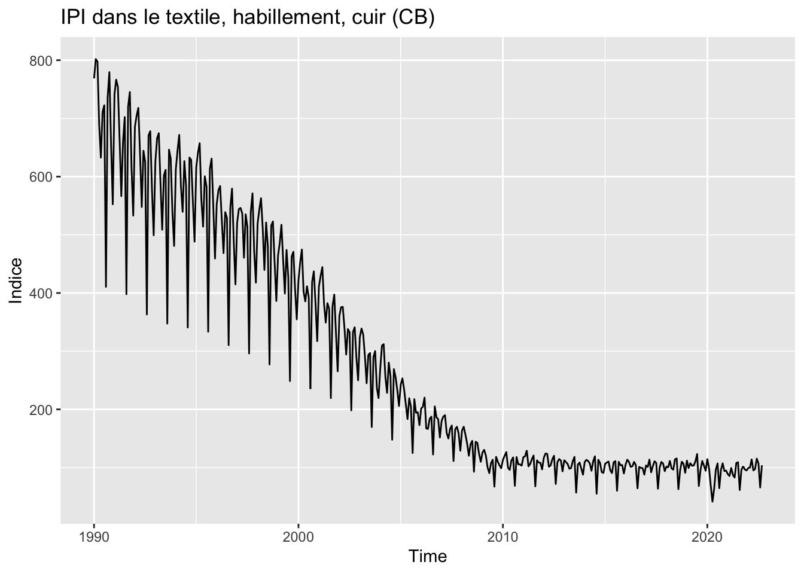
On repère une tendance à la baisse jusqu’en 2010 puis une tendance relativement stable. La saisonnalité semble proportionnelle au niveau, le schéma de décomposition est sûrement multiplicatif. Il faudra passer au log la série pour STL (schéma de décomposition non géré automatiquement).
cb_stl_mobile <- stl(log(ipi_cb), s.window = 7)
cb_stl_fixed <- stl(log(ipi_cb), s.window = "periodic")
cb_x13_sans_cjo <- x13(ipi_cb, "RSA3")
cb_x13_avec_cjo <- x13(ipi_cb, "RSA5c")
p <- (autoplot(exp(seasadj(cb_stl_fixed)), ylab = NULL, main = "STL saisonnalité fixée") +
autoplot(exp(seasadj(cb_stl_mobile)), ylab = NULL, main = "STL s.window=7")) /
(autoplot(seasonaladj(cb_x13_sans_cjo), ylab = NULL, main = "X-13 sans CJO") +
autoplot(seasonaladj(cb_x13_avec_cjo), ylab = NULL, main = "X-13 avec CJO"))
p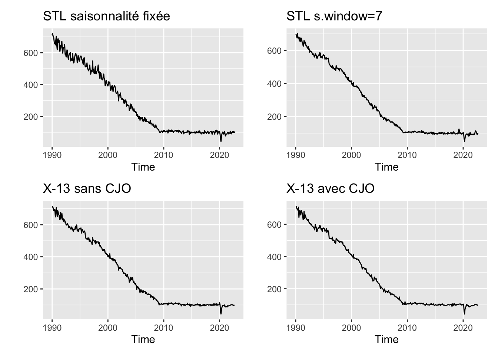
Il est difficile d’analyser les graphiques mais il semble que l’on a les mêmes constats que précédemment : STL avec une saisonnalité fixe conduit à des estimations erratiques et une partie de la variabilité restante semble provenir des effets jours ouvrables. On peut refaire le graphique après 2010 en utilisant par exemple la fonction & de patchwork qui permet d’appliquer à élément à tous les graphiques (de la même façon on aurait pu utiliser la fonction window sur les données en entrée).
p & coord_cartesian(xlim = c(2010, 2019),
ylim = c(85, 130))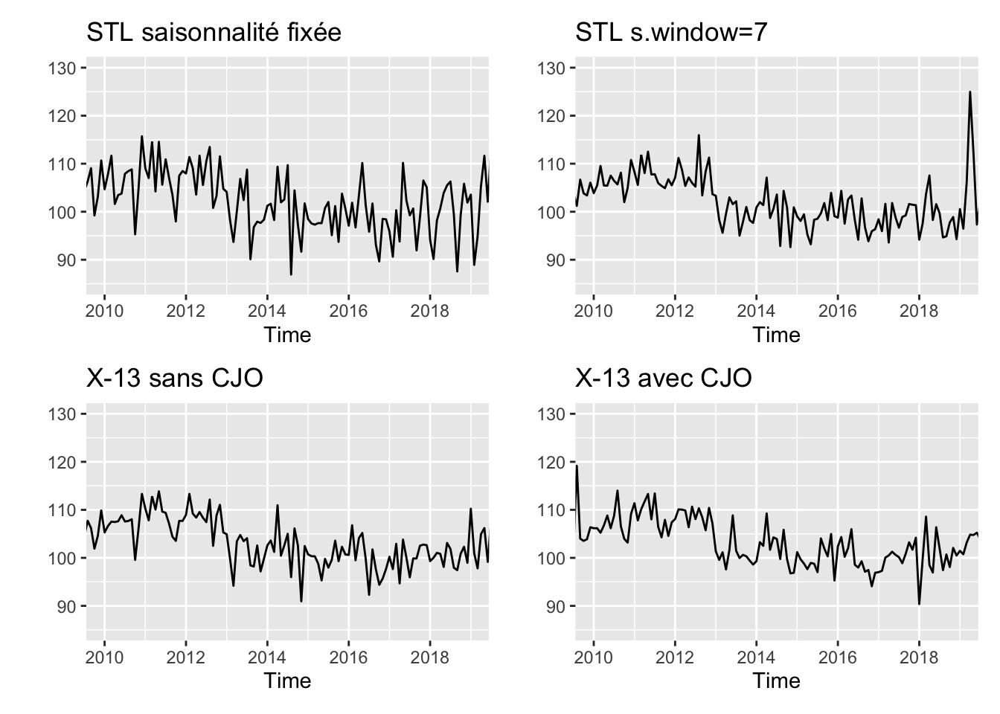
Même constat que précédemment sur l’année bissextile même si sur l’exemple (1996) la différence n’est pas très forte.
cb_x13_avec_cjo$regarimay = regression model + arima (3, 1, 1, 0, 1, 0)
Log-transformation: no
Coefficients:
Estimate Std. Error
Phi(1) -0.3753 0.063
Phi(2) -0.1075 0.060
Phi(3) -0.2599 0.057
Theta(1) -0.9478 0.033
Estimate Std. Error
Monday 0.9095 0.691
Tuesday 1.0802 0.692
Wednesday 2.3714 0.700
Thursday 0.2554 0.692
Friday 0.7146 0.701
Saturday -2.8858 0.689
Leap year 1.1978 2.213
Easter [1] -5.0870 1.424
TC (3-2020) -41.5459 6.539
LS (1-1996) -33.9004 5.778
TC (7-1991) 37.1581 6.258
LS (2-2004) 25.4803 5.846
LS (7-1993) 32.3702 5.781
TC (10-1993) -29.3495 6.286
LS (4-1997) 26.9281 5.889
TC (5-1991) -26.1855 6.274
AO (4-2020) -28.3794 6.443
Residual standard error: 9.46 on 358 degrees of freedom
Log likelihood = -1393, aic = 2831 aicc = 2834, bic(corrected for length) = 4.822sa_data <- ts.union(exp(seasadj(cb_stl_mobile)), seasonaladj(cb_x13_avec_cjo))
colnames(sa_data) <- c("STL", "X13")
autoplot(window(sa_data, start = 1995, end = c(1997, 12)),
ylab = "",
main = "Série désaisonnalisée IPI CB autour de l'année bissextile de 1996") +
geom_vline(xintercept = c(1996) + 1/12,linetype = 2)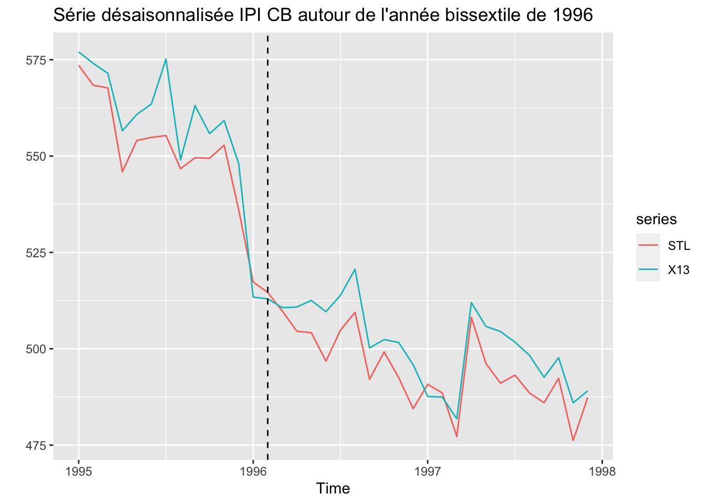
Exercice
Même exercice sur la série co2 : quel schéma de décomposition parait plausible ? Quel spécification parait adaptée ? On pourra utiliser la fonction le package dygraphs pour comparer les séries.
Solution
autoplot(co2, main = "Concentration atmosphérique de CO2 à Mauna Loa")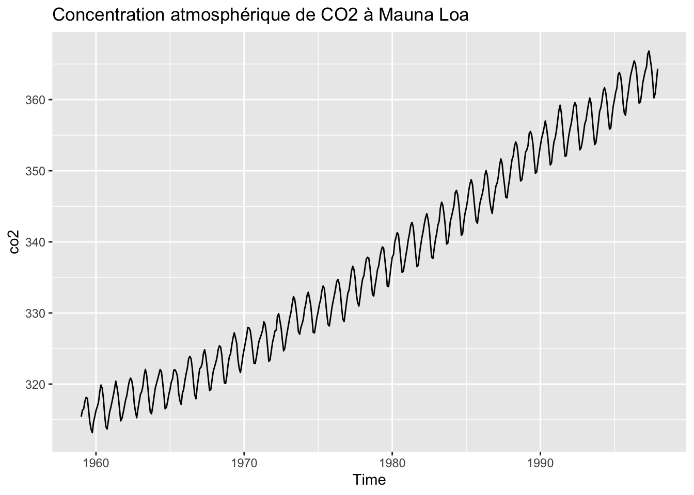
Série déjà étudiée : une tendance linéaire mais la saisonnalité n’est pas proportionnelle au niveau. Aucune transformation n’est nécessaire. Pas de raison de faire de la cjo. On repère une tendance à la hausse jusqu’en 2009, une rupture lors de la crise financière puis une tendance qui parait relativement stable. La saisonnalité ne semble pas proportionnelle au niveau, le schéma de décomposition est sûrement additif.
co2_stl_mobile <- stl(co2, s.window = 7)
co2_stl_fixed <- stl(co2, s.window = "periodic")
co2_x13 <- x13(co2, "RSA3")
co2_x13$regarima # Un schéma multiplicatif est retenu mais cela ne devrait pas changer les résultatsy = regression model + arima (0, 1, 1, 0, 1, 1)
Log-transformation: yes
Coefficients:
Estimate Std. Error
Theta(1) -0.3598 0.044
BTheta(1) -0.9116 0.022
Residual standard error: 0.0008342 on 452 degrees of freedom
Log likelihood = 2569, aic = 164.9 aicc = 164.9, bic(corrected for length) = -14.15co2_x13_add <- x13(co2, "RSA0")
data_cvs <- ts.union(seasadj(co2_stl_fixed),
seasadj(co2_stl_mobile),
seasonaladj(co2_x13),
seasonaladj(co2_x13_add))
data_tc <- ts.union(forecast::trendcycle(co2_stl_fixed),
forecast::trendcycle(co2_stl_mobile),
ggdemetra::trendcycle(co2_x13),
ggdemetra::trendcycle(co2_x13_add))
data_s <- ts.union(forecast::seasonal(co2_stl_fixed),
forecast::seasonal(co2_stl_mobile),
ggdemetra::seasonal(co2_x13),
ggdemetra::seasonal(co2_x13_add))
colnames(data_cvs) <- colnames(data_tc) <- colnames(data_s) <-
c("STL sais. fixée", "STL", "X-13 (Multiplicatif)", "X-13 (Additif)")
autoplot(data_cvs, main = "Série désaisonnalisée")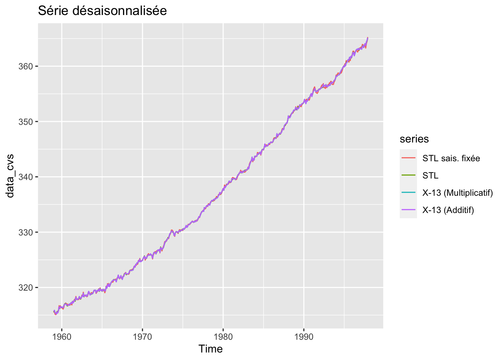
autoplot(data_tc, main = "Tendance-Cycle")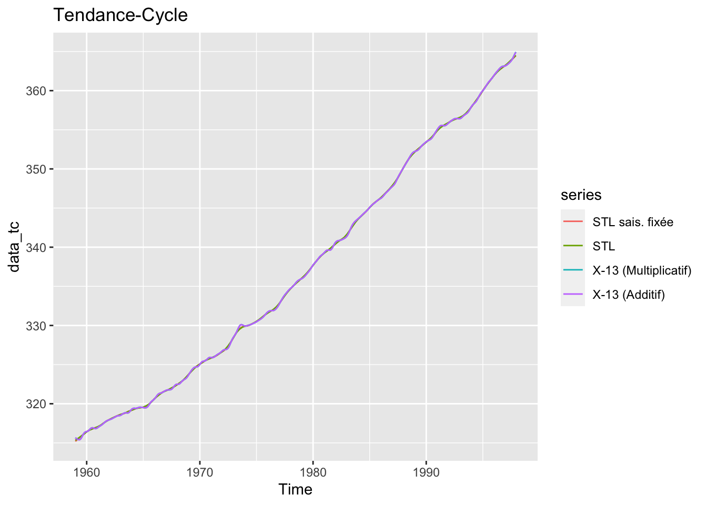
autoplot(data_s, main = "Composante saisonnière")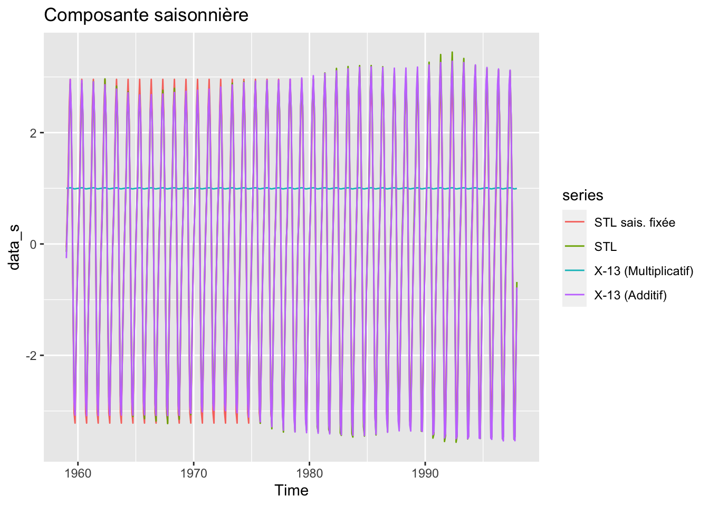
Graphique peu visible mais les résultats semblent proches. Le package dygraphs permet de faire un graphique interactif qui pourra permettre.
library(dygraphs)
dygraph(data_cvs, main = "Série désaisonnalisée") %>%
dyRangeSelector()dygraph(data_tc, main = "Tendance-Cycle") %>%
dyRangeSelector()En zoomant on note que les résultats sur la tendance-cycle sont très proches entre les différentes méthodes. Les différences sur la série désaisonnalisée provient essentiellement de la composante saisonnière qui évolue légèrement dans le temps :
feasts::gg_season(tsibble::as_tsibble(data_s))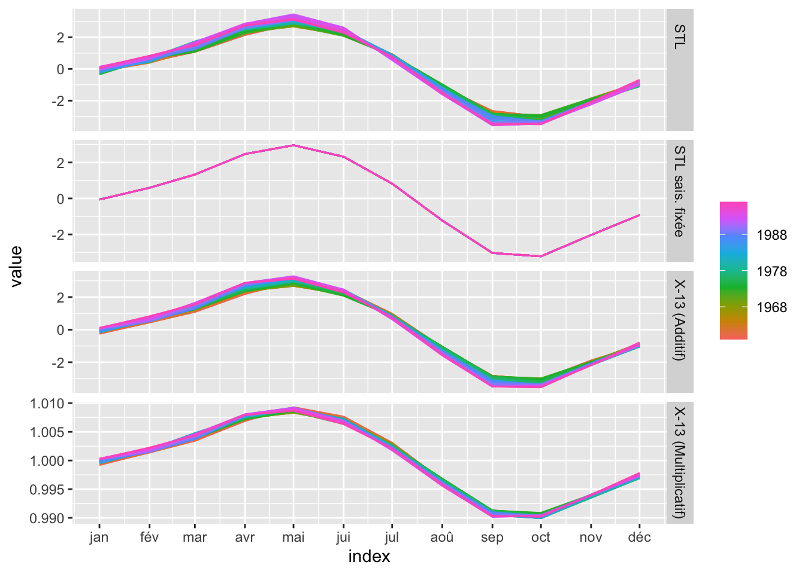